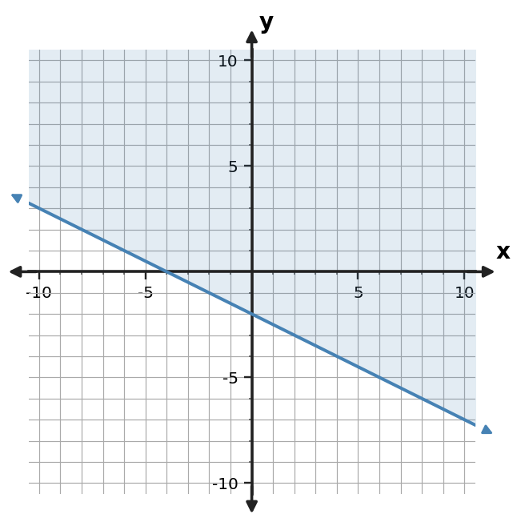
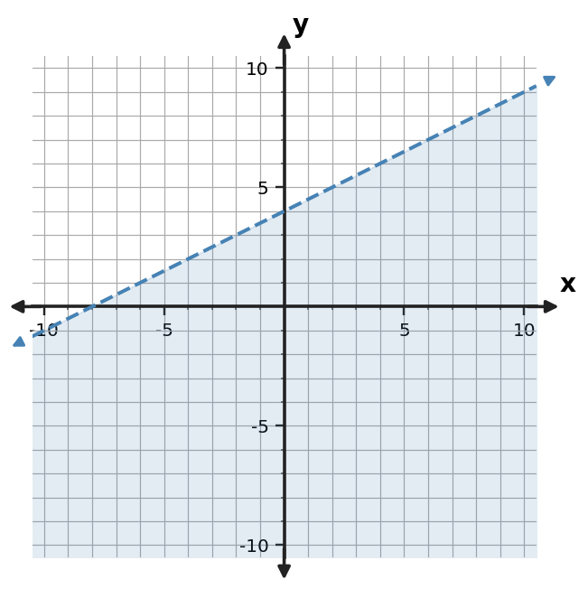
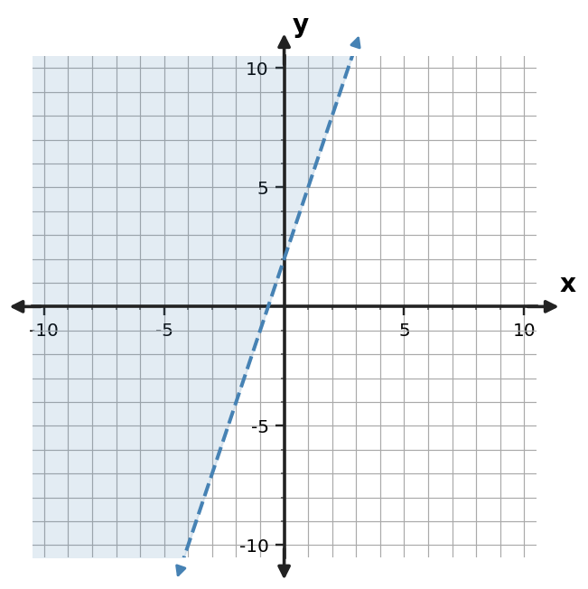

Algebra Practice 3.4
1. Use the test-point table to decide whether $(0,0)$ belongs in the solution region.
| Test point | Left side y | Boundary value | Satisfies? |
|---|---|---|---|
| (0,0) | 0 | 1 | Yes |
2. Represent $y \gt -x+3$ on a coordinate plane, including the boundary style and shaded half-plane.
3. Write an inequality represented by the shaded graph. Include the correct inequality symbol.

4. A student graphs $y \lt x+1$ with a dashed boundary and shades above. Critique the graph and state the needed correction.
5. Write an inequality represented by the shaded graph. Include the correct inequality symbol.

6. For $y \lt -x+3$, state whether the boundary is solid or dashed and which side is shaded.
7. Use the test-point table to decide whether $(0,0)$ belongs in the solution region.
| Test point | Left side y | Boundary value | Satisfies? |
|---|---|---|---|
| (0,0) | 0 | -2 | No |
8. Construct the graph of $y \gt -2x+4$ with the appropriate line style and shading.
9. Write an inequality represented by the shaded graph. Include the correct inequality symbol.

10. A student graphs $y \le -2x-2$ with a solid boundary and shades above. Critique the graph and state the needed correction.
11. Write an inequality represented by the shaded graph. Include the correct inequality symbol.

12. For $y \ge -2x+3$, state whether the boundary is solid or dashed and which side is shaded.
13. Use the test-point table to decide whether $(2,0)$ belongs in the solution region for $y \ge 2x$.
| Test point | Left side y | Boundary value | Satisfies? |
|---|---|---|---|
| (2,0) | 0 | 4 | No |
14. Construct the graph of $y \ge -2x+3$ with the appropriate boundary style and shaded half-plane.
15. Write an inequality represented by the shaded graph. Include the correct inequality symbol.

16. A student graphs $y \gt -3x+3$ with a solid boundary and shades above. Critique the graph and state the needed correction.
17. Write an inequality represented by the shaded graph. Include the correct inequality symbol.

18. For $y \ge x-1$, state whether the boundary is solid or dashed and which side is shaded.
19. Use the test-point table to decide whether $(0,2)$ belongs in the solution region for $y \lt -2x-2$.
| Test point | Left side y | Boundary value | Satisfies? |
|---|---|---|---|
| (0,2) | 2 | -2 | No |
20. Construct the graph of $y \gt -x-2$ with the appropriate boundary style and shaded half-plane.
21. Write an inequality represented by the shaded graph. Include the correct inequality symbol.

22. A student graphs $y \le 3x+2$ with a solid boundary and shades above. Critique the graph and state the needed correction.
23. Write an inequality represented by the shaded graph. Include the correct inequality symbol.

24. For $y \lt 2x$, state whether the boundary is solid or dashed and which side is shaded.